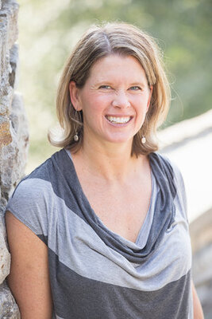
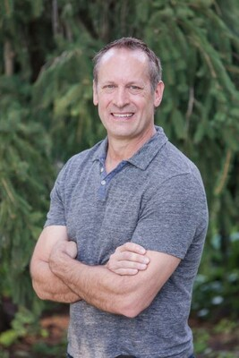
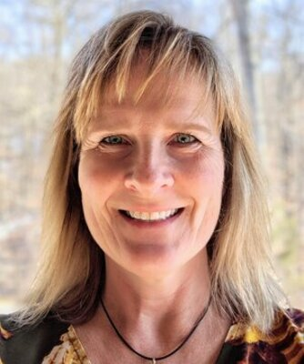
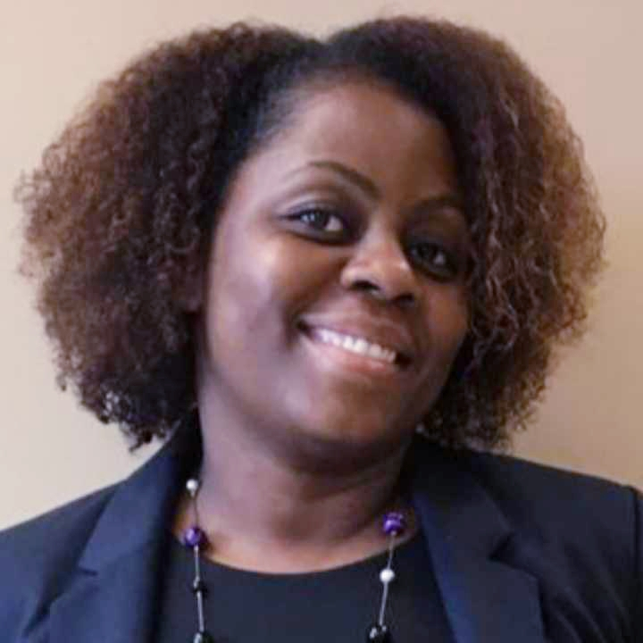

Éducation
Accompagner l’apprentissage et ouvrir des perspectives.
À PROPOS DE SONJE AYITI
Des humanitaires haïtiens et internationaux réunis pour un avenir durable en Haïti.
Sonje Ayiti signifie « Souvenez-vous d’Haïti ». Notre organisation a été fondée pour reconstruire Haïti de manière durable, en apportant espoir, fierté et dignité aux personnes qu’elle accompagne.

LES ORIGINES
2004
Une rencontre. Une prise de conscience.
Un engagement pour Haïti.
Lors d'un voyage en Haïti en août 2004, Gabie a croisé une ancienne camarade de classe qui peinait à vendre quelques produits cosmétiques au bord de la route. Elle a immédiatement pensé à ses parents, qui avaient entrepris la traversée vers les États-Unis en bateau, et plus particulièrement à sa mère, décédée lors de cette tentative.
Gabie se sentait investie d'une mission : soutenir les Haïtiens afin qu'ils puissent construire et vivre un avenir durable en Haïti, avec fierté et dignité. Après le passage de l'ouragan Jeanne en septembre 2004, et suite aux reportages de CNN sur les difficultés quotidiennes des Haïtiens, Gabie a invité trois Haïtiens de souche à réfléchir ensemble à la manière d'aider leurs compatriotes. Par la prière et une profonde introspection, Gabie a trouvé la motivation nécessaire pour orienter le peuple haïtien vers un avenir meilleur, et c'est ainsi que l'organisation Sonje Ayiti a vu le jour. Sonje Ayiti signifie « Souviens-toi d'Haïti » en créole.
En 2006, un groupe d'humanitaires internationaux s'est associé à elle pour soutenir les Haïtiens dans les domaines de l'éducation, du développement économique et de la promotion de la santé.
L'organisation Sonje Ayiti est devenue une association à but non lucratif (501c3) en décembre 2005 et une organisation non gouvernementale en Haïti en septembre 2008.
Lors d’un voyage en Haïti, Gabie retrouve une ancienne camarade de classe et prend conscience de sa mission.
Sonje Ayiti devient une association à but non lucratif, sous le statut 501(c)(3).
Un groupe d’humanitaires internationaux rejoint Gabie pour soutenir l’action de l’organisation.
Sonje Ayiti devient une organisation non gouvernementale en Haïti.
NOTRE MISSION
Les humanitaires haïtiens et internationaux de Sonje Ayiti collaborent pour améliorer les conditions de vie de la communauté haïtienne à travers l’éducation, le développement économique et la promotion de la santé.
Accompagner l’apprentissage et ouvrir des perspectives.
Contribuer à une autonomie durable au sein des communautés.
Participer à l’amélioration des conditions de vie.
LES PERSONNES DERRIÈRE LA MISSION
Des parcours complémentaires en développement, éducation, finance et politiques publiques, au service d’une même vision.
Fondatrice et directrice générale
Née en Haïti, Gabie est citoyenne américaine. Elle est titulaire d'une licence en systèmes d'information informatique de l'université DeVry à Decatur, en Géorgie. Forte d'une expérience diversifiée dans le secteur public et le développement, elle est la principale force motrice de Sonje Ayiti en Haïti. Son esprit d'entreprise, son leadership et son empathie font d'elle la personne idéale pour mener à bien des projets transformateurs dans un pays confronté à de nombreux défis socio-économiques.

Directrice financière
Katie est une citoyenne américaine titulaire d'une licence de Kalamazoo College et d'un MBA de l'Université Washington de Saint-Louis. Elle a travaillé 27 ans chez Procter & Gamble, occupant divers postes en finance et comptabilité, et a également été PDG de Tide Cleaners. Avec son mari, Frank Wray, elle s'investit depuis plus de 10 ans auprès de Sonje Ayiti, où elle pilote les levées de fonds et les initiatives de développement pour la Cima School of Hope.

Secrétaire
Frank est citoyen américain. Il est titulaire d'une licence (BA) du Hastings College, d'une maîtrise (MS) de l'Eastern Illinois University et d'un doctorat (PhD) de l'Université du Kansas. Il enseigne depuis plus de vingt ans à l'Université de Cincinnati et à la Western Governors University. Avec son épouse, Katie Kool-Wray, il contribue activement au développement de la Cima School of Hope et soutient l'action de Sonje Ayiti.

Directrice de l’éducation
Carol est une citoyenne américaine titulaire d'une licence en marketing de l'Université de Louisville. Elle s'est rendue pour la première fois en Haïti en 2010, où elle a collaboré avec plusieurs organisations à but non lucratif. Sa rencontre avec Gabie Aurel, fondatrice de Sonje Ayiti, sa visite à l'école Cima School of Hope et ses rencontres avec des adultes et des enfants dont la vie s'est améliorée grâce à l'organisation Sonje Ayiti l'ont motivée à trouver un parrain ou une marraine pour chaque élève de l'école Cima.

Directrice de la collecte de fonds
Betty est une citoyenne américaine née en Haïti. Elle est titulaire d'une maîtrise en gestion organisationnelle, spécialisée en gestion internationale. Actuellement directrice de plusieurs agences chez JP Morgan, elle travaille dans le secteur financier depuis 27 ans. Son expérience auprès de fondations à but non lucratif remonte à plus de 15 ans, au cours desquelles elle a occupé diverses fonctions.
Responsable des subventions et directrice de la stratégie
Stefani Tieri Georges, boursière Chevening et titulaire d'un MSc en politique et politiques publiques (Université Nottingham Trent), est une professionnelle des politiques et du développement spécialisée dans la gouvernance, l'égalité des sexes et le développement durable.
Stefani a été consultante en politiques de genre et assistante parlementaire au Sénat de la République d'Haïti. Forte d'une expérience en droit, en politiques publiques et en développement international, elle œuvre à l'intersection de la résilience communautaire, de la gouvernance inclusive et de l'équité sociale.
POUR ALLER PLUS LOIN
Une question sur notre organisation ou notre mission ? Écrivez à l’équipe Sonje Ayiti.